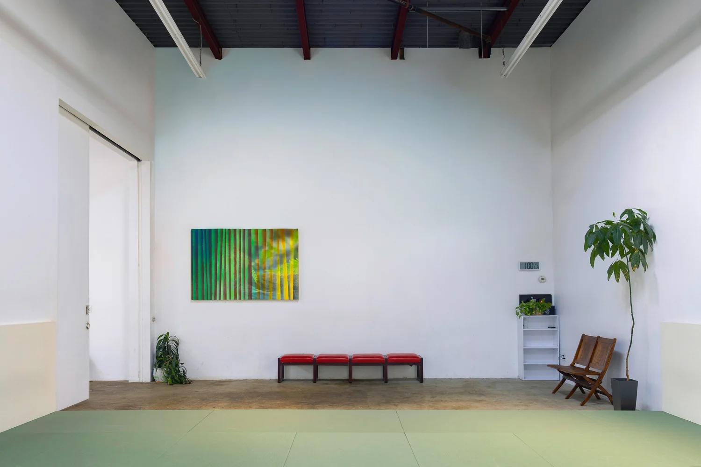
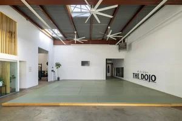

Taiji

Ruhe, Bewegung, Wahrnehmung
Innere Kampfkunst
Taiji umfasst ein umfangreiches System von Kampfkunst und Selbstverteidigung, Gesundheitstraining und mentalen Übungen.
Gesundheit und Alltag
Körperwahrnehmung
Speziell Körperwahrnehmung, bewusstes Erkennen und Loslassen von Verspannungen sowie Koordination sind wichtige Trainingsbestandteile, die direkt in das Alltagsleben übertragbar sind.
Die langsamen, fließenden Bewegungen ermöglichen ein feinfühliges Erkennen und Korrigieren ungünstiger Haltungs- und Bewegungsmuster.

Chen Taiji
Formen, Partnerübungen, Theorie
In unserem Unterricht beziehen wir uns auf das Chen Taiji. Dazu gehören Chen Taiji Formen, Seidenfadenübungen, Partnerübungen, Tuishou, Meditationsübungen und theoretische Grundlagen.

Gruppen
Erwachsene von 20 bis 80+
Wir haben nur Erwachsenentrainingsgruppen für Anfänger und Fortgeschrittene. Die Altersspanne unserer Taiji-Trainierenden liegt zwischen den Zwanzigern und Achtzigern und umfasst alle Geschlechter.